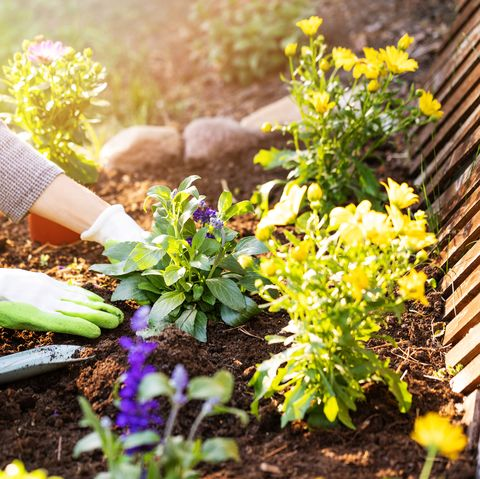

Vrijeme sadnje
Vrijeme je za prve radove u vrtu ili balkonu i zato vam donosimo vodič kroz vrtlarske radove
na vašim balkonima, terasama ili vrtovima .Ne postoji određeni datum kad morate da sadite cvijeće. Sadnja cvijeća
isključivo zavisi od vremenskih uslova i vrste biljke. Posadite sada naše cvijeće i ono će ukrašavati vašu baštu
svakog proljetnog, ljetnog ili jesenjeg dana. Sadite biljke nakon što prestanu mrazevi. Biljke koje se presađuju s mjesta
na mjesto mogu se presaditi čim vlažnost zemlje to dopusti i kad se zemlja odmrzne. Svakako, cvijeće možete kombinovati sa začinskim biljem ali i
voćem i povrćem kako biste upotpunili vašu baštu, balkon ili čak prozor u vašem domu na kojem se može naći lijepa ali i korisna biljka. Za vas smo
odabrali cvijeće koje se sadi u proljeće.
Najbolje cvijetnice
Begonije
Begonije krase šareni cvijetovi i lijepo raspoređeni listovi. Treba ih saditi u blago kiselu podlogu koja je puna hranjivih sastojaka.
Ovo cvijeće ne voli vlagu, pa će mu najbolja podloga biti ona koja je pripremljena od mješavine treseta sa kompostom.
Dalije
Dalije su visoke biljke predivnog izgleda, ne zahtijevaju preveliku brigu i obožavaju sunce.
Zalijevanje je potrebno samo u slučaju suše, a sjeme dalija se sadi u aprilu. Dalije posađene
u travnju cvjetaju cijelo ljeto.
Neven
Neven je bogat ljekovitim svojstvima, a osvaja svojom ljepotom. Sjeme nevena se sadi u aprilu, a predivan cvijet
cvate u maju. Kako bi neven krasio vašu baštu što duže potrebno je redovno trgati višak oko njega. Ako ga želite
iskoristiti za čaj ili neku vrstu liječenja, preporučuje se da ga uberete u avgustu kada je cvijet nevena najkvalitetniji.
